WorldSR: Harnessing World Knowledge Search for Grounded Image Super-Resolution
1 Honor Device Co., Ltd · 2 Shenzhen University of Advanced Technology
Corresponding authors
1 Honor Device Co., Ltd · 2 Shenzhen University of Advanced Technology
Corresponding authors
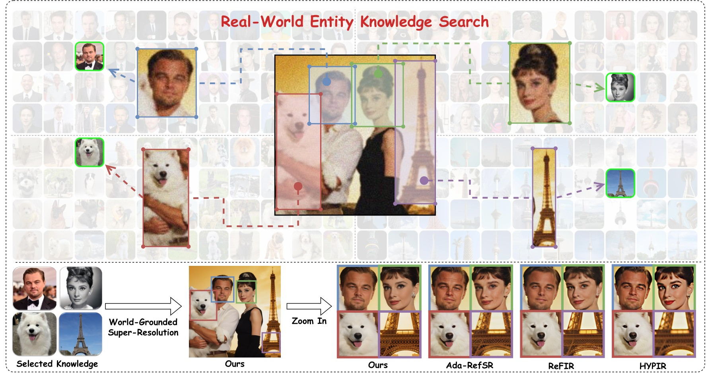
WorldSR integrates explicit, entity-aligned visual world knowledge into super-resolution. Entities in the low-resolution input (people, animals, landmarks) are matched to real-world references retrieved from the web, and a world-grounded SR model transfers authentic details into the final result, mitigating hallucinations.
Generative-prior-based super-resolution (SR) methods leverage implicit knowledge learned from large-scale models to enhance low-resolution inputs. However, such priors are inherently stochastic and optimized for diverse generation, conflicting with the deterministic, high-fidelity reconstruction required for SR. It is also tied to the base model, costly to update, and prone to hallucinations as real-world data evolves.
To address these limitations, we introduce WorldSR, a novel framework that augments SR with explicit, entity-aligned visual world knowledge. WorldSR automatically decomposes the input into semantic entities and performs entity-wise retrieval of structurally and semantically aligned images from a large-scale external corpus. For efficiency and reliability, we incorporate a memory mechanism to reuse previously retrieved results and a multi-step filtering process to refine candidate references. The selected references as world knowledge are then integrated through a novel multi-reference super-resolution model, which provides fine-grained constraints for detail synthesis and structural recovery. Experiments on real-world SR benchmarks show that WorldSR consistently improves structural fidelity and visual quality, outperforming existing generative super-resolution methods. Our results suggest that entity-level grounding in external visual world knowledge provides a simple and effective complement to model-bound generative priors.
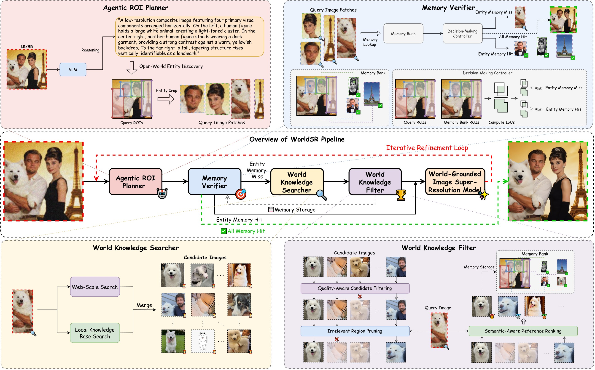
Overview of the WorldSR pipeline. The agent-style framework operates in an iterative refinement loop with five key components: Agentic ROI Planner, Memory Verifier, World Knowledge Searcher, World Knowledge Filter, and the World-Grounded Image Super-Resolution Model.
A MLLM performs entity-level semantic reasoning on the input and produces open-world ROI bounding boxes; corresponding image patches are cropped for downstream retrieval, with an iterative loop feeding intermediate SR results back as visual feedback.
A Memory Bank caches previously explored ROIs together with their filtered world knowledge. A Decision-Making Controller routes each query by IoU: memory hits skip redundant search, and all-hit queries terminate the refinement loop.
A dual-engine retrieval strategy combines web-scale reverse image search (high-resolution source scraping) with a local knowledge base searched via visual-encoder embeddings and cosine similarity, merging candidates into a unified set.
Candidates are refined through quality-aware filtering (IQA models), irrelevant region pruning (MLLM grounding), and semantic-aware reference ranking, selecting the optimal reference per entity.
Reference Quality Refinement first restores retrieved references; Reference-Guided SR then formulates multi-reference super-resolution as unified sequence modeling over a text-to-image DiT with a dual-LoRA design decoupling LR- and reference-domain tokens.
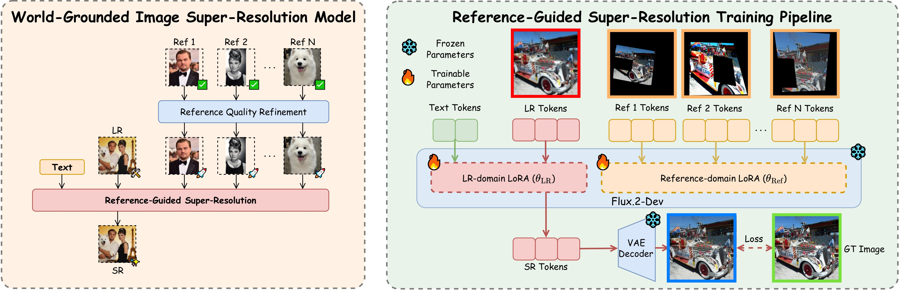
The world-grounded SR model is built on a pretrained text-to-image DiT backbone (Flux.2-dev) with three LoRA adapters (θRQR, θLR, θRef) trained via QLoRA. LR tokens and reference tokens are concatenated along the sequence dimension, enabling unconstrained global interactions and faithful knowledge injection.
Comparison with state-of-the-art methods on RealLQ250, Bird, Face, WRSR, and CUFED5. WorldSR establishes a new state of the art across all no-reference metrics.
| Method | MUSIQ ↑ | CLIPIQA ↑ | MANIQA ↑ | RALI ↑ | Q-Insight ↑ |
|---|---|---|---|---|---|
| Real-ESRGAN | 62.52 | 0.5435 | 0.3565 | 3.6604 | 3.7444 |
| OSEDiff | 69.16 | 0.6649 | 0.4089 | 3.8456 | 3.9584 |
| PISA-SR | 70.91 | 0.6951 | 0.4431 | 3.8480 | 3.9383 |
| HYPIR | 69.75 | 0.6978 | 0.4561 | 3.9048 | 3.9783 |
| OMGSR | 68.74 | 0.6444 | 0.4270 | 3.9236 | 3.9799 |
| AgenticIR | 64.36 | 0.6185 | 0.3956 | 3.6879 | 3.7559 |
| WorldSR (Ours) | 73.32 | 0.7649 | 0.5954 | 3.9940 | 4.0270 |
| Method | MUSIQ ↑ | CLIPIQA ↑ | MANIQA ↑ | RALI ↑ | Q-Insight ↑ |
|---|---|---|---|---|---|
| Real-ESRGAN | 29.03 | 0.3600 | 0.2797 | 1.9279 | 1.9670 |
| OSEDiff | 74.30 | 0.8391 | 0.4891 | 4.0416 | 3.9048 |
| PISA-SR | 74.37 | 0.8369 | 0.5322 | 3.9564 | 3.9221 |
| HYPIR | 74.86 | 0.8462 | 0.5386 | 4.0398 | 4.0072 |
| OMGSR | 74.10 | 0.7887 | 0.4831 | 3.9483 | 3.9524 |
| AgenticIR | 26.21 | 0.2226 | 0.1395 | 1.9104 | 1.7159 |
| SeeSR+ReFIR | 76.18 | 0.8850 | 0.6131 | 4.1608 | 4.1264 |
| Ada-RefSR | 72.23 | 0.8330 | 0.4489 | 3.8462 | 3.8361 |
| WorldSR (Ours) | 77.12 | 0.8822 | 0.6785 | 4.2081 | 4.1659 |
| Method | MUSIQ ↑ | CLIPIQA ↑ | MANIQA ↑ | RALI ↑ | Q-Insight ↑ | IDS ↑ |
|---|---|---|---|---|---|---|
| Real-ESRGAN | 26.34 | 0.3665 | 0.2971 | 1.9702 | 2.0762 | 0.6904 |
| OSEDiff | 71.85 | 0.6399 | 0.5110 | 4.0838 | 3.8975 | 0.5518 |
| PISA-SR | 76.00 | 0.7178 | 0.5901 | 4.1090 | 4.0493 | 0.6605 |
| HYPIR | 76.14 | 0.7165 | 0.6091 | 4.0294 | 4.0181 | 0.6467 |
| OMGSR | 70.55 | 0.5907 | 0.4793 | 3.8515 | 3.8466 | 0.7094 |
| AgenticIR | 25.81 | 0.2378 | 0.1485 | 1.9610 | 1.8070 | 0.6723 |
| SeeSR+ReFIR | 75.43 | 0.7115 | 0.6175 | 4.1100 | 4.0765 | 0.6175 |
| Ref-LDM | 73.77 | 0.6637 | 0.5252 | 3.9690 | 3.9554 | 0.6790 |
| InstantRestore | 69.74 | 0.5691 | 0.4748 | 3.8179 | 3.8841 | 0.7705 |
| Ada-RefSR | 74.45 | 0.6381 | 0.5215 | 4.0267 | 3.8969 | 0.7364 |
| WorldSR (Ours) | 77.57 | 0.8089 | 0.7517 | 4.2522 | 4.1917 | 0.8199 |
| Method | MUSIQ ↑ | CLIPIQA ↑ | MANIQA ↑ | RALI ↑ | Q-Insight ↑ |
|---|---|---|---|---|---|
| Real-ESRGAN | 64.72 | 0.6006 | 0.3994 | 3.5315 | 3.6321 |
| OSEDiff | 70.31 | 0.6559 | 0.4323 | 3.8766 | 3.9146 |
| PISA-SR | 69.55 | 0.6386 | 0.4326 | 3.7831 | 3.8176 |
| HYPIR | 72.02 | 0.7288 | 0.5050 | 3.9533 | 4.0453 |
| OMGSR | 69.87 | 0.6571 | 0.4669 | 3.9042 | 3.9989 |
| AgenticIR | 58.07 | 0.6077 | 0.3890 | 3.3047 | 3.3771 |
| SeeSR+ReFIR | 72.37 | 0.7124 | 0.5029 | 4.0277 | 4.0291 |
| Ada-RefSR | 70.13 | 0.6602 | 0.4187 | 3.8534 | 3.9038 |
| WorldSR (Ours) | 74.57 | 0.7761 | 0.6244 | 4.1676 | 4.1302 |
| Method | MUSIQ ↑ | CLIPIQA ↑ | MANIQA ↑ | RALI ↑ | Q-Insight ↑ |
|---|---|---|---|---|---|
| Real-ESRGAN | 64.72 | 0.4238 | 0.3636 | 2.9274 | 3.1440 |
| OSEDiff | 63.24 | 0.4899 | 0.3629 | 3.2859 | 3.2802 |
| PISA-SR | 64.27 | 0.5003 | 0.3828 | 3.3195 | 3.3583 |
| HYPIR | 68.27 | 0.5758 | 0.4580 | 3.4699 | 3.6293 |
| OMGSR | 65.16 | 0.5417 | 0.4504 | 3.4593 | 3.5837 |
| AgenticIR | 61.24 | 0.5172 | 0.3550 | 3.0420 | 3.0846 |
| SeeSR+ReFIR | 70.47 | 0.5503 | 0.4714 | 3.7514 | 3.7375 |
| Ada-RefSR | 66.23 | 0.5219 | 0.3484 | 3.2536 | 3.3032 |
| WorldSR (Ours) | 72.52 | 0.6846 | 0.6198 | 3.8854 | 3.8196 |
Red / blue: best / second-best performance. WorldSR surpasses the second-best face-specific approach by +6.4% IDS on the Face dataset, and is the best performer across all no-reference metrics on CUFED5.
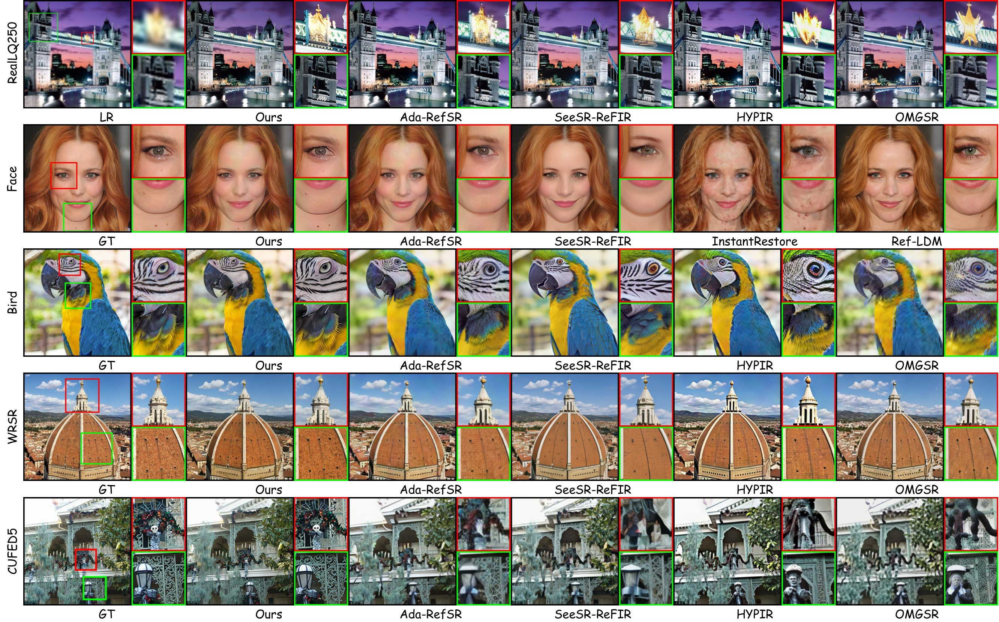
Qualitative comparison on RealLQ250, Face, Bird, WRSR, and CUFED5. WorldSR effectively transfers world knowledge from retrieved references into the final SR results, yielding clearly better real-world realism and visual quality than no-reference and reference-based competitors.
Click a dataset, then use the ‹ / › arrows to browse results. Click any figure to enlarge.
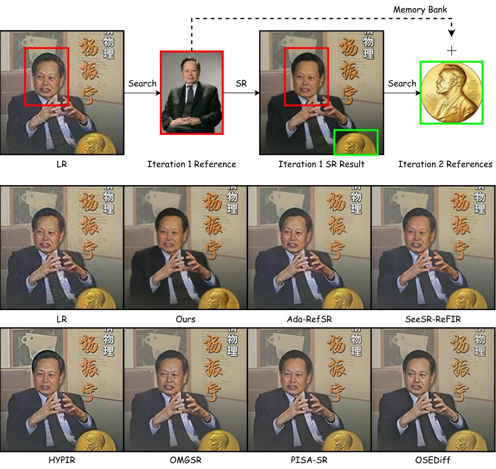
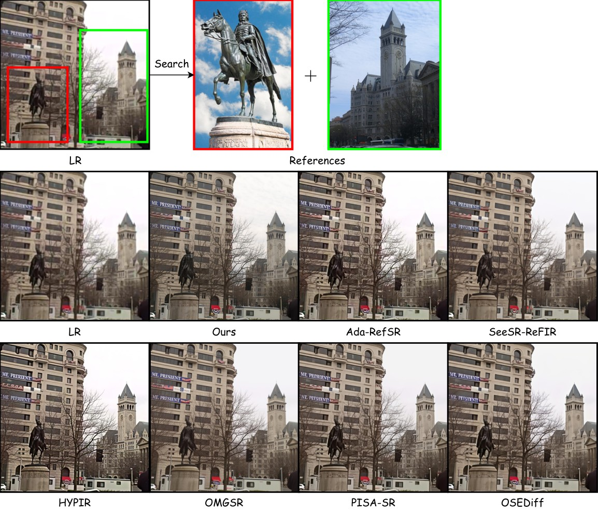
Case 1 / 2
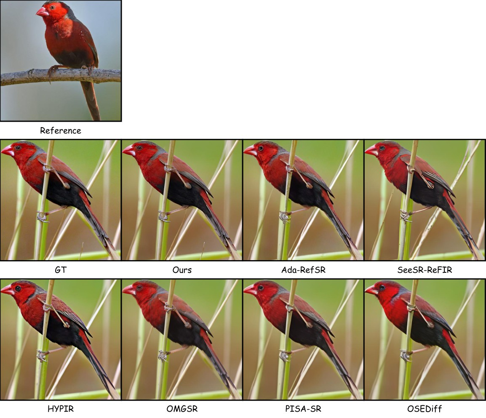
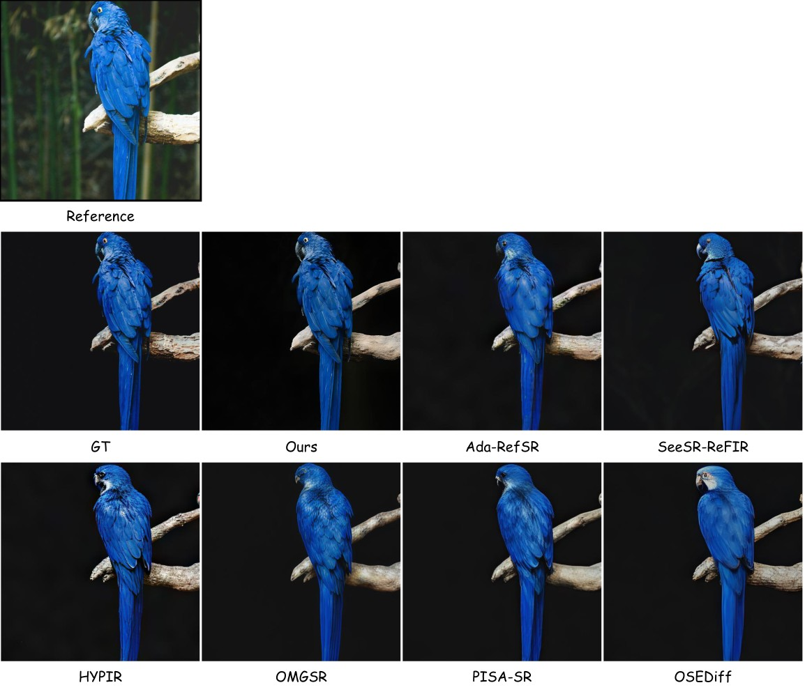
Case 1 / 2
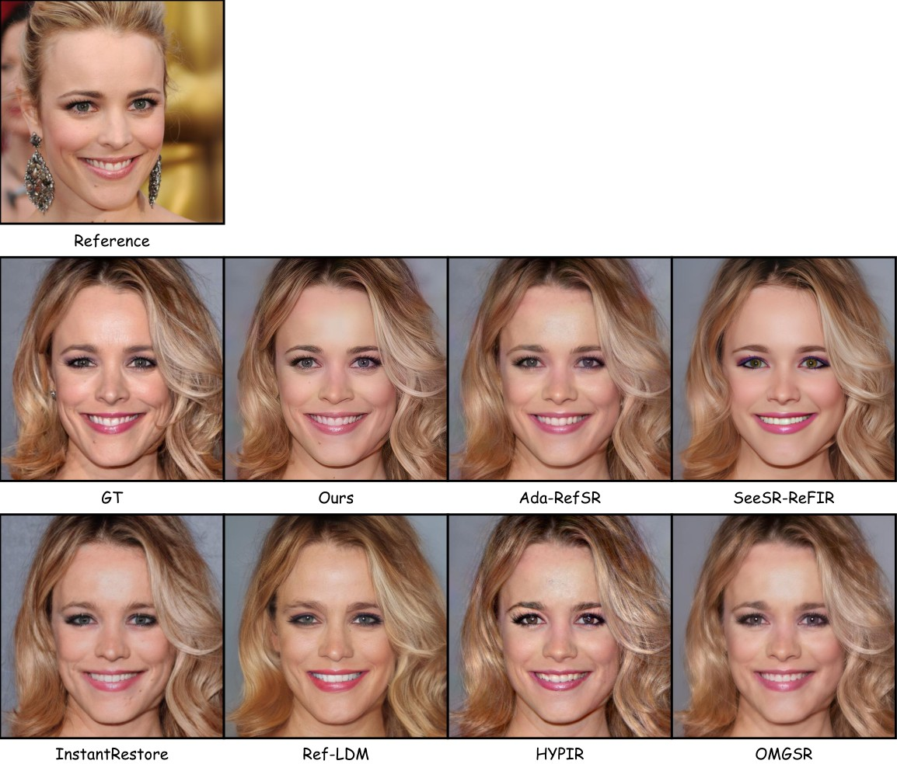
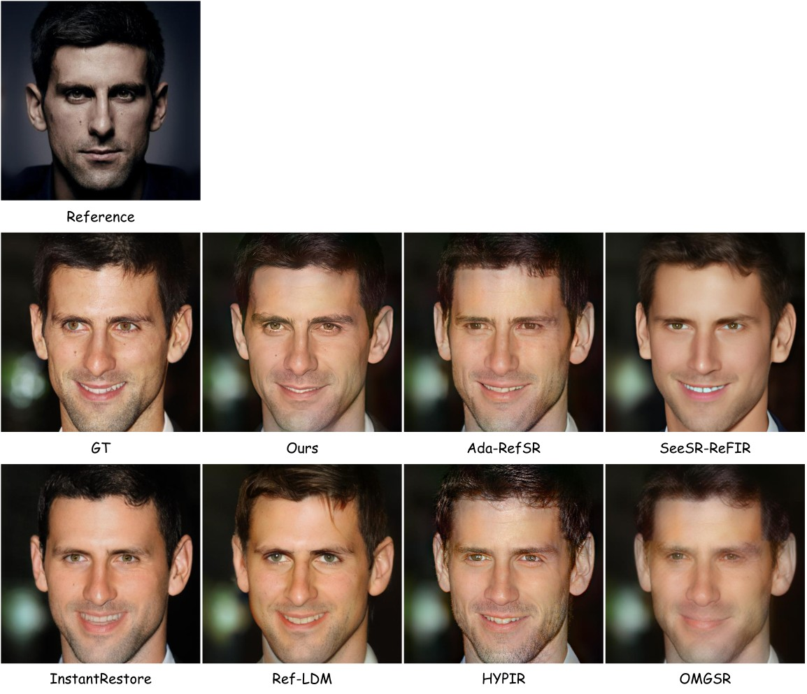
Case 1 / 2
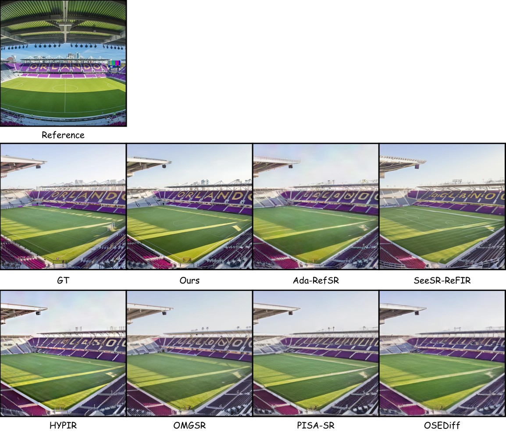
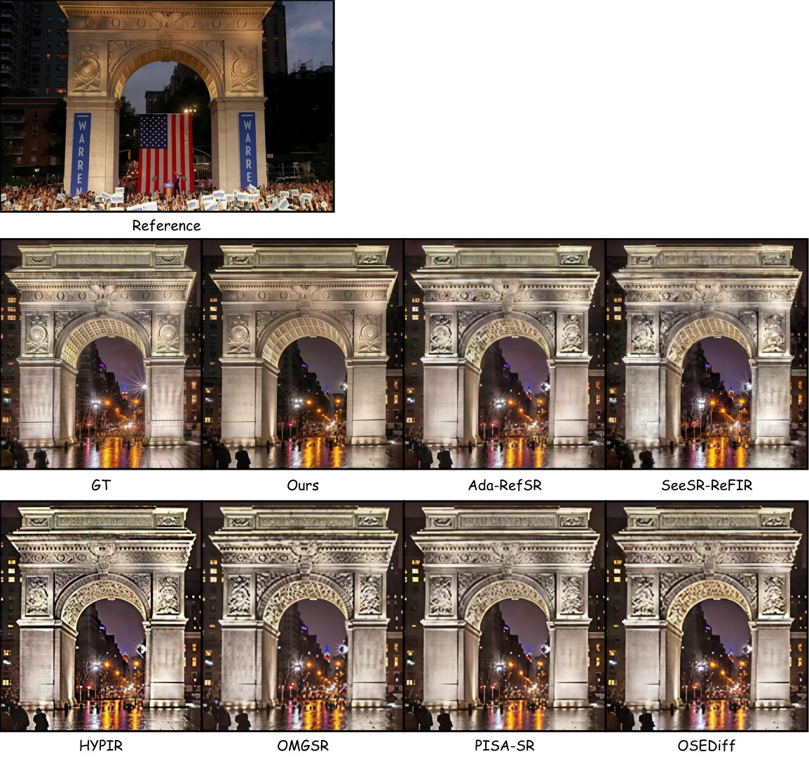
Case 1 / 2
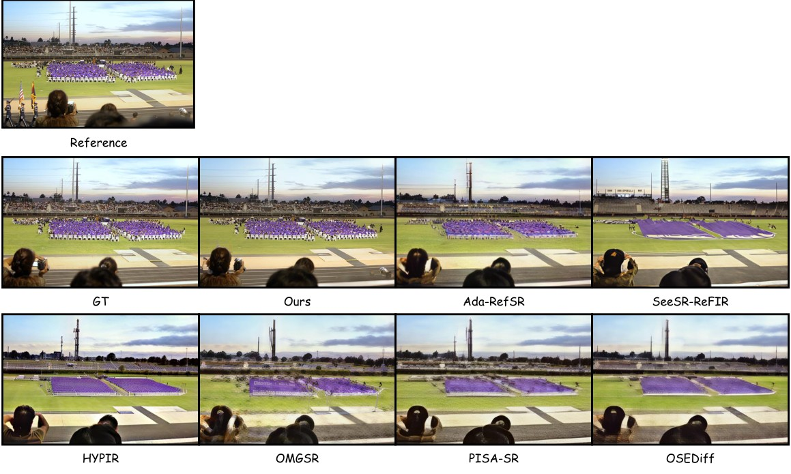
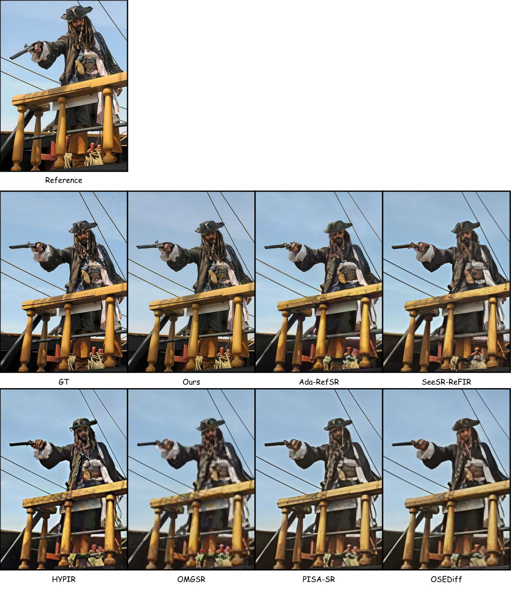
Case 1 / 2
Beyond benchmarks, WorldSR plugs into real-world applications: for each degraded input, a sharp reference is retrieved via entity-level search, and the world-grounded SR model restores it. Inside a comparison: scroll to zoom, drag to pan, drag the round handle to wipe. Click any other image to enlarge.
A 100× telephoto shot taken by a smartphone is severely blurred. WorldSR restores it with a DSLR-quality photo of the same poster retrieved by entity-level search. Drag the slider to compare.


Example 1 / 2
WorldSR fixes the identity-fidelity (ID) issue of Nano Banana-generated ID photos, restoring the person's true identity with a web-retrieved reference of the same person. Drag the slider to compare.


Example 1 / 2
A degraded AI-generated artwork is repaired and re-rendered at a higher resolution, using its clear original as the reference. Drag the slider to compare.


Blurry, floaty 3DGS renders are cleaned up and sharpened with a sharp reference frame. Drag the slider to compare.


WorldSR extends from images to videos: a degraded video is enhanced with entity-level world knowledge, recovering sharp, faithful details in every frame. Play the two videos to compare the input (left) with the WorldSR result (right) — they stay in sync.
Example 1 / 2
@inproceedings{deng2026worldsr,
title = {WorldSR: Harnessing World Knowledge Search for Grounded Image Super-Resolution},
author = {Deng, Junyuan and Wu, Xinyi and Wu, Zhenyao and Wang, Song and Wang, Yu and Zhu, Congchao},
booktitle = {Advances in Neural Information Processing Systems (NeurIPS)},
year = {2026}
}